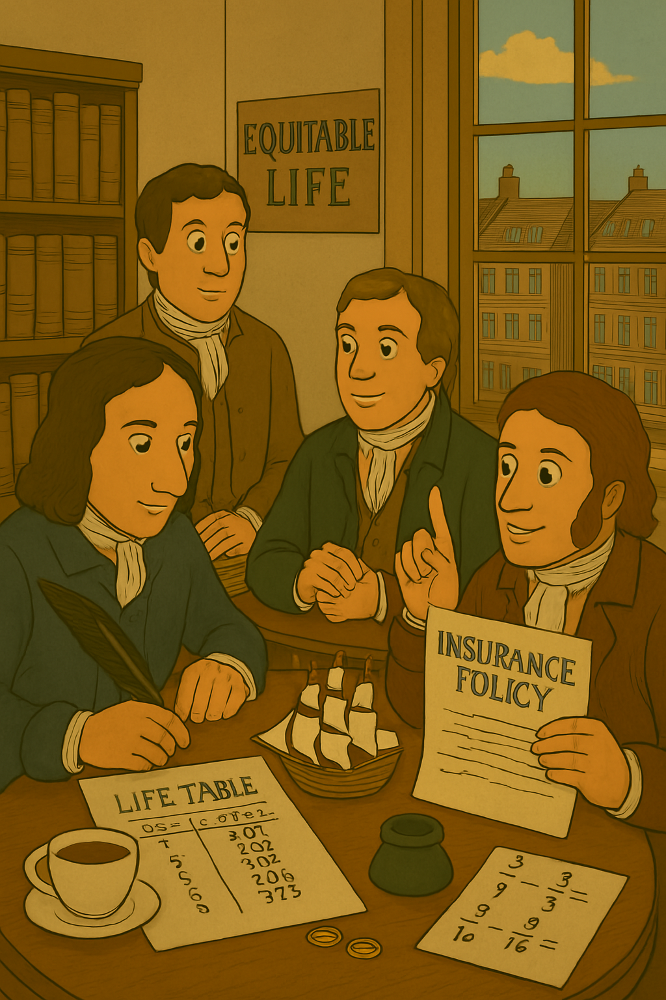
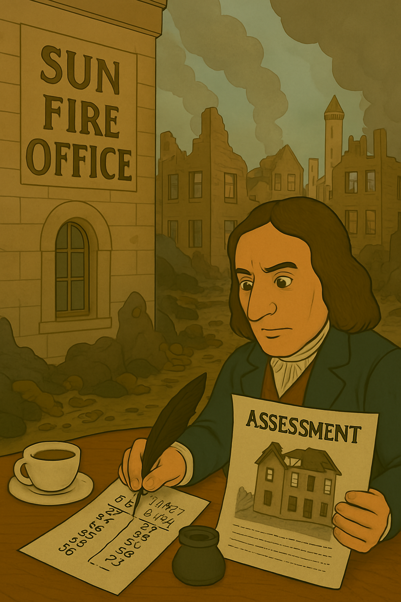

챕터 5: 18세기 – 상업 보험의 황금기
18세기는 산업화와 도시화로 위험(화재, 사망, 해상 사고)이 증가한 시기입니다. 보험계리학이 상업적으로 적용되며, 보험 회사가 설립되었습니다. 영국과 프랑스 중심으로 수학적 계산이 보험료를 결정하였습니다.
The 18th century was a period marked by industrialization and urbanization, increasing risks such as fires, deaths, and maritime accidents. Actuarial science was commercially applied, leading to the establishment of insurance companies. Mathematical calculations, centered in Britain and France, determined premiums.
Amicable Society: 최초의 상호 생명보험(Amicable Society: The First Mutual Life Insurance)
1706년 Amicable Society for a Perpetual Assurance Office는 세계 최초의 상호 생명보험 회사입니다. 회원들이 정기 회비를 내고 사망 시 유족에게 보험금을 지급하였습니다. 에드먼드 할리의 생명표를 활용하였으나, 나이별 차등 보험료는 없었습니다. 이는 생명보험의 대중화를 열었습니다.
The Amicable Society for a Perpetual Assurance Office, founded in 1706, was the world’s first mutual life insurance company. Members paid regular dues, and upon death, their families received insurance payouts. It utilized Edmond Halley’s life table but lacked age-differentiated premiums. This opened the door to the popularization of life insurance.
로이드 커피하우스: 해상 보험의 성장(Lloyd’s Coffee House: Growth of Marine Insurance)
1720년대 로이드 커피하우스는 Bubble Act로 Royal Exchange Assurance와 London Assurance에 독점권이 부여되었으나, 민간 언더라이터(underwriters)가 시장을 장악하였습니다. 그들은 화물과 선박의 위험을 평가하며 보험료를 계산하였습니다. 이는 계리적 위험 분석의 상업적 적용입니다.
In the 1720s, Lloyd’s Coffee House saw exclusive rights granted to Royal Exchange Assurance and London Assurance under the Bubble Act, yet private underwriters dominated the market. They assessed risks for cargo and ships to calculate premiums, marking the commercial application of actuarial risk analysis.
Equitable Life: 나이별 보험료 혁신(Equitable Life: Age-Differentiated Premium Innovation)
1762년 Equitable Life Assurance Society는 제임스 도드슨이 주도한 회사로, 나이별 사망률을 기반으로 보험료를 차등화하였습니다. 할리의 생명표를 발전시켜 현대 보험계리학의 핵심(나이별 위험 상관관계)을 본격화하였습니다.
The Equitable Life Assurance Society, led by James Dodson in 1762, introduced age-differentiated premiums based on mortality rates. Building on Halley’s life table, it established the core of modern actuarial science by formalizing the correlation between age and risk.
그림 5.1: Equitable Life의 계리 계산, 1762
Sun Fire Office: 화재 보험 체계화(Sun Fire Office: Systematization of Fire Insurance)
1765년 Sun Fire Office는 런던 대화재(1666) 후 화재 보험을 체계화하였습니다. 건물 가치를 평가하고 위험을 분류하여 보험료를 책정하였습니다. 이는 재산 보험의 계리적 접근입니다.
In 1765, the Sun Fire Office systematized fire insurance following the Great Fire of London (1666). It assessed building values and classified risks to set premiums, representing an actuarial approach to property insurance.
그림 5.2: Sun Fire Office의 화재 보험, 1765
Society of Lloyd’s: 글로벌 리더십(Society of Lloyd’s: Global Leadership)
1771년 Society of Lloyd’s는 로이드 커피하우스를 공식 조직화하며 해상 보험의 글로벌 리더가 되었습니다. 언더라이터들이 위험을 평가하고 계약을 체결하는 시스템이 정착하였습니다.
In 1771, the Society of Lloyd’s formalized Lloyd’s Coffee House, becoming a global leader in marine insurance. A system where underwriters evaluated risks and concluded contracts was established.
이 시기의 공통점은 보험계리학의 수학적 과학화입니다. 17세기의 확률론이 상업 보험 시장을 키웠으며, 생명·해상·화재 보험이 현대적 형태를 띠었습니다.
The common thread of this period is the mathematical scientific development of actuarial science. The probability theory of the 17th century fueled the commercial insurance market, with life, marine, and fire insurance taking on modern forms.
요약 테이블(Summary)
| 연도 | 주요 제도/사건 | 설명 | 보험계리학과의 연관성 |
|---|---|---|---|
| 1706 | Amicable Society 설립 | 최초의 상호 생명보험 회사, 회비 기반 보험금 지급 | 생명표 기반 보험료 계산의 시작, 대중화 |
| 1720 | 로이드의 해상 보험 성장 | Bubble Act와 언더라이터 활약, 화물/선박 평가 | 위험 평가와 보험료의 상업적 적용 |
| 1762 | Equitable Life 설립 | 나이별 차등 보험료 도입, 도드슨 주도 | 현대 보험계리학의 본격적 출발, 사망률 상관관계 |
| 1765 | Sun Fire Office 체계화 | 화재 위험 분류, 건물 가치 평가 | 재산 보험의 계리적 접근, 위험 분류 |
| 1771 | Society of Lloyd’s 조직화 | 해상 보험 시장 정착, 언더라이터 시스템 | 계리 기반 위험 거래 체계, 글로벌 리더십 |
출처(references)
- Dickson, D. C. M., Hardy, M. R., & Waters, H. R. (2009). Actuarial Mathematics for Life Contingent Risks. Cambridge University Press.
- Supple, B. (1970). The Royal Exchange Assurance: A History of British Insurance 1720-1970. Cambridge University Press.
- Haberman, S. (1995). “The History of Actuarial Science in the 18th Century.” History of Actuarial Science, Vol. 3.